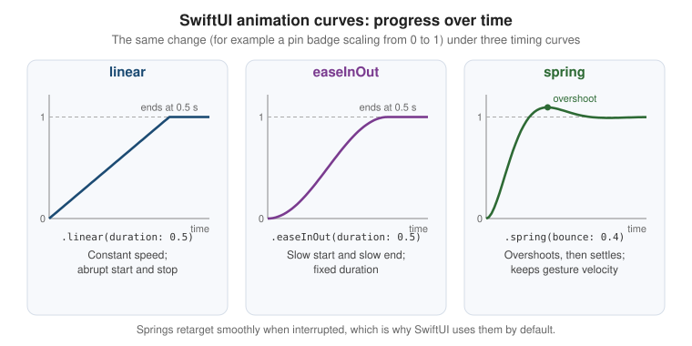

Drawing, Animation and Gestures
|
This content was generated with the assistance of AI and should be verified against the official documentation before being relied on in production. |
Most of an app’s interface is made of standard controls, lists and navigation containers, but the parts people
remember are usually the custom ones: a card that folds back when it is pinned, a capture indicator that pulses
while it records, a photo that you can pinch and turn with two fingers. This page covers the three SwiftUI
toolkits behind those details: drawing (shapes, paths, immediate-mode canvases and Metal shaders),
animation (from a one-line implicit animation to keyframe timelines) and gestures (from a tap to composed,
input-aware gestures). Everything is written against iOS, iPadOS, macOS, watchOS and visionOS 27, built with
Xcode 27 and Swift 6.4, while FieldNotes keeps a deployment minimum of 26. APIs that exist only on
the 27 releases, such as gesture input kinds, are labelled "new in 27" and guarded with if #available.
The examples extend the FieldNotes views introduced on
SwiftUI Views and Modifiers and
Lists, Tables and Collections: NoteRow,
NoteDetail, NoteEditor, TagChip and the floating CaptureButton. State ownership (@State,
@Environment(NoteStore.self)) is explained on State and Data
Flow with Observation; this page only uses it.
Drawing with Shapes and Paths
A Shape is a view that describes itself as a Path inside a rectangle. SwiftUI ships the common ones
(Rectangle, RoundedRectangle, UnevenRoundedRectangle, Capsule, Circle, Ellipse) and every one of them
can be filled, stroked, used as a clip mask, used as a hit-test area with contentShape(_:), or passed to a
modifier that takes a shape, such as glassEffect(_:in:) on
Liquid Glass, Materials and Icons. Because a shape is
resolution-independent, it stays sharp at every Dynamic Type size and display scale.
When the built-in shapes are not enough, you conform your own type to Shape and implement one method,
path(in:). FieldNotes draws its note cards with a folded top-trailing corner, like a page of a paper
notebook. The fold size is a stored property so that it can be animated later on this page:
import SwiftUI
/// A note card whose top-trailing corner is folded over like a paper page.
@Animatable
struct NoteCardShape: Shape {
/// Length of the folded edge, in points. Animatable, so pinning a note can "fold" the card.
var foldSize: CGFloat = 18
@AnimatableIgnored var cornerRadius: CGFloat = 12
func path(in rect: CGRect) -> Path {
let fold = min(foldSize, rect.width / 3, rect.height / 3)
var path = Path()
path.move(to: CGPoint(x: rect.minX + cornerRadius, y: rect.minY))
path.addLine(to: CGPoint(x: rect.maxX - fold, y: rect.minY))
path.addLine(to: CGPoint(x: rect.maxX, y: rect.minY + fold))
path.addLine(to: CGPoint(x: rect.maxX, y: rect.maxY - cornerRadius))
path.addArc(tangent1End: CGPoint(x: rect.maxX, y: rect.maxY),
tangent2End: CGPoint(x: rect.maxX - cornerRadius, y: rect.maxY),
radius: cornerRadius)
path.addLine(to: CGPoint(x: rect.minX + cornerRadius, y: rect.maxY))
path.addArc(tangent1End: CGPoint(x: rect.minX, y: rect.maxY),
tangent2End: CGPoint(x: rect.minX, y: rect.maxY - cornerRadius),
radius: cornerRadius)
path.addLine(to: CGPoint(x: rect.minX, y: rect.minY + cornerRadius))
path.addArc(tangent1End: CGPoint(x: rect.minX, y: rect.minY),
tangent2End: CGPoint(x: rect.minX + cornerRadius, y: rect.minY),
radius: cornerRadius)
path.closeSubpath()
return path
}
}The @Animatable macro (available since the 26 SDK) synthesizes the animatableData property that SwiftUI
interpolates during an animation, from every stored property that conforms to VectorArithmetic;
@AnimatableIgnored excludes a property. Without the macro you would write animatableData by hand, as older
code does. How macros expand is explained in the Swift reference under
Macros.
Using the shape is the same as using any other shape: fill it, stroke it, and clip the card’s content to it.
struct NoteCard: View {
let note: Note
var body: some View {
VStack(alignment: .leading, spacing: 6) {
Text(note.title).font(.headline)
Text(note.body).font(.subheadline).lineLimit(3)
}
.padding()
.frame(maxWidth: .infinity, alignment: .leading)
.background {
NoteCardShape(foldSize: note.isPinned ? 28 : 18)
.fill(.background.secondary)
.stroke(.separator, lineWidth: 1)
}
.contentShape(NoteCardShape())
}
}Immediate-Mode Drawing with Canvas
Shapes are retained: each one is a view with its own identity, which SwiftUI diffs and lays out. That is
ideal for a handful of elements and wasteful for hundreds. Canvas is the immediate-mode alternative: you get a
GraphicsContext and a size, and you issue drawing commands (fill, stroke, draw text, draw images, apply
filters and transforms) every time the canvas redraws. Nothing inside a canvas is a view, so nothing inside it is
individually accessible or tappable; give the canvas itself an accessibility label or representation (see
Accessibility).
FieldNotes lets you sketch on a note (a trail map, the shape of a leaf). Each stroke is an array of points, and the canvas draws them all in one pass:
struct InkStroke: Identifiable, Hashable {
var id = UUID()
var points: [CGPoint]
var width: CGFloat = 3
}
struct SketchCanvas: View {
var strokes: [InkStroke]
var body: some View {
Canvas { context, size in
// Paper background and a light grid, like a field notebook.
context.fill(Path(CGRect(origin: .zero, size: size)), with: .color(.yellow.opacity(0.08)))
var grid = Path()
for x in stride(from: 0, through: size.width, by: 24) {
grid.move(to: CGPoint(x: x, y: 0)); grid.addLine(to: CGPoint(x: x, y: size.height))
}
for y in stride(from: 0, through: size.height, by: 24) {
grid.move(to: CGPoint(x: 0, y: y)); grid.addLine(to: CGPoint(x: size.width, y: y))
}
context.stroke(grid, with: .color(.secondary.opacity(0.2)), lineWidth: 0.5)
// The ink itself.
for stroke in strokes {
var path = Path()
path.addLines(stroke.points)
context.stroke(path, with: .color(.primary),
style: StrokeStyle(lineWidth: stroke.width, lineCap: .round, lineJoin: .round))
}
}
.accessibilityLabel("Sketch")
}
}Canvas also takes a symbols closure that lets you draw SwiftUI views (for example an SF Symbol) into the
context by tag, and rendersAsynchronously: true moves drawing off the main thread for heavy scenes. For a view
tree of many small retained shapes that animate together, drawingGroup() is the related tool: it flattens the
subtree into a single Metal-backed layer before compositing.
Driving a Canvas over Time with TimelineView
TimelineView re-evaluates its content on a schedule: .periodic(from:by:) for a clock-like tick,
.everyMinute, an explicit list of dates, or .animation for every display frame (it pauses automatically when
the view is not visible, and .animation(minimumInterval:paused:) lets you throttle or stop it). The content
closure receives a context whose date is the moment being rendered, which makes it a natural driver for a
Canvas. FieldNotes shows pulsing rings around the capture button while a voice note is recording:
struct RecordingPulse: View {
var isRecording: Bool
var body: some View {
TimelineView(.animation(minimumInterval: 1.0 / 30.0, paused: !isRecording)) { timeline in
Canvas { context, size in
let center = CGPoint(x: size.width / 2, y: size.height / 2)
let time = timeline.date.timeIntervalSinceReferenceDate
for ring in 0..<3 {
// Each ring grows and fades on a 1.5 s cycle, offset from the previous one.
let phase = (time / 1.5 + Double(ring) / 3).truncatingRemainder(dividingBy: 1)
let radius = 20 + phase * min(size.width, size.height) / 2
let circle = Path(ellipseIn: CGRect(x: center.x - radius, y: center.y - radius,
width: radius * 2, height: radius * 2))
context.stroke(circle, with: .color(.red.opacity(1 - phase)), lineWidth: 2)
}
}
}
.allowsHitTesting(false)
.accessibilityHidden(true)
}
}On watchOS, TimelineView is also how an always-on display keeps showing correct information while the wrist is
down; the schedule tells the system in advance which dates to render.
Metal Shader Effects
Since the 17 releases, SwiftUI can run a Metal shader function per pixel of a view, with three modifiers:
| Modifier | What the shader computes |
|---|---|
|
A new color for each pixel, from its position and current color. Tints, grain, color grading. |
|
A new source position for each pixel, so the view appears bent. Ripples, waves, magnifiers. |
|
A new color computed by sampling the view’s rasterized layer at any positions. Blurs, pixelation, edge detection. |
Shader functions live in a .metal file in the app target, are marked [[ stitchable ]], and are looked up by
name through ShaderLibrary, which uses dynamic member lookup, so ShaderLibrary.paperGrain refers to the
function paperGrain. Extra parameters after the required ones are passed as Shader.Argument values such as
.float(_:), .color(_:) or .boundingRect. FieldNotes gives its sketch canvas a subtle paper texture:
// FieldNotes/Shaders/PaperShaders.metal
#include <metal_stdlib>
#include <SwiftUI/SwiftUI_Metal.h>
using namespace metal;
// colorEffect signature: position, current color, then custom arguments.
[[ stitchable ]] half4 paperGrain(float2 position, half4 color, float strength) {
float noise = fract(sin(dot(position, float2(12.9898, 78.233))) * 43758.5453);
half grain = half((noise - 0.5) * strength);
return half4(color.rgb + grain * color.a, color.a);
}
// distortionEffect signature: position, then custom arguments; returns the source position.
[[ stitchable ]] float2 waterRipple(float2 position, float time, float amplitude) {
return position + float2(0, sin(position.x / 18.0 + time * 6.0) * amplitude);
}See Apple Developer Documentation -- layerEffect(_:maxSampleOffset:isEnabled:), whose discussion, like those of the other two modifiers, gives the exact Metal function signature each effect expects. Writing Metal shaders and renderers of your own is the subject of the Metal sub-section of Graphics & Games, and SwiftUI Shaders and RealityKit Interop bridges the two.
struct TexturedSketch: View {
var strokes: [InkStroke]
@Environment(\.accessibilityReduceMotion) private var reduceMotion
var body: some View {
SketchCanvas(strokes: strokes)
.colorEffect(ShaderLibrary.paperGrain(.float(0.06)))
}
}
struct RippleOnSave: View {
var start: Date
var body: some View {
TimelineView(.animation) { timeline in
let elapsed = timeline.date.timeIntervalSince(start)
Image(systemName: "checkmark.circle.fill")
.font(.system(size: 64))
.distortionEffect(
ShaderLibrary.waterRipple(.float(elapsed), .float(max(0, 6 - elapsed * 8))),
maxSampleOffset: CGSize(width: 0, height: 6)
)
}
}
}See Apple Developer Documentation — Shader, Apple Developer Documentation — ShaderLibrary, Apple Developer Documentation -- colorEffect(_:isEnabled:) and Apple Developer Documentation -- distortionEffect(_:maxSampleOffset:isEnabled:).
maxSampleOffset tells SwiftUI how far outside the view a distortion may read, so that it can allocate enough
margin; an undersized value clips the effect. A layerEffect shader instead takes a SwiftUI::Layer parameter
and calls layer.sample(position), which is why the Metal file includes SwiftUI_Metal.h. Shaders are compiled
at build time with the rest of the target; the first use of each one on a device still costs a pipeline
compilation, so SwiftUI lets you warm them up in advance with Shader.compile(as:) if a hitch shows up in
Instruments (see Performance and Instruments).
Animation
SwiftUI animations are state-driven. You never tell a view to move from A to B; you change state, SwiftUI
computes the new view tree, and an animation in the current transaction decides how every animatable value
(position, size, opacity, color, a shape’s animatableData) travels from its old value to its new one. There
are two ways to attach that animation.
Implicit Animation: animation(_:value:)
animation(_:value:) animates every animatable change below it in the view tree whenever value changes. It
is scoped: a change to any other state does not animate. NoteRow animates its pin indicator whenever
note.isPinned flips, regardless of which code flipped it:
struct NoteRow: View {
let note: Note
var body: some View {
HStack {
Text(note.title)
Spacer()
Image(systemName: "pin.fill")
.foregroundStyle(.orange)
.scaleEffect(note.isPinned ? 1 : 0.01)
.opacity(note.isPinned ? 1 : 0)
.animation(.snappy, value: note.isPinned)
}
}
}The original animation(_:) without a value: parameter was deprecated in the 15 releases because it
animated every change, including ones you did not intend, such as the first layout pass. Newer code can also scope an animation to specific
modifiers with animation(_:body:).
Explicit Animation: withAnimation
withAnimation(_:_:) runs a closure inside a transaction that carries the animation, so every view whose
appearance depends on the state changed in the closure animates, wherever it is. This is the right tool when
the action decides whether something animates, rather than the view. The completion variant runs code once the
animation is logically complete:
struct NoteDetailToolbar: View {
@Environment(NoteStore.self) private var store
let note: Note
@State private var showsSavedBanner = false
var body: some View {
Button(note.isPinned ? "Unpin" : "Pin", systemImage: "pin") {
withAnimation(.bouncy) {
store.togglePin(note)
} completion: {
showsSavedBanner = true
}
}
}
}See Apple Developer Documentation -- withAnimation(_:_:) and Apple Developer Documentation -- withAnimation(_:completionCriteria:_:completion:).
Both styles write the animation into a Transaction. withTransaction(_:_:) and transaction(_:) expose it
directly, for example to disable animations for one change (transaction.disablesAnimations = true) or to carry
custom values between the call site and the animating view.
Springs and Timing Curves
A timing curve maps elapsed time to progress. SwiftUI offers classic Bézier curves (.linear, .easeIn,
.easeOut, .easeInOut, .timingCurve(…)) and physically based springs. Since the 17 releases,
Animation.default (which withAnimation uses when you pass no argument) is a spring rather than easeInOut,
and Apple recommends springs for most interface motion:
a spring can be interrupted and retargeted at any moment, and it carries its current velocity into the new
target, so an animation that is reversed halfway (a sheet flicked back up, a pin toggled twice quickly) never
jumps. Bézier curves have no velocity, so they restart from rest.
Springs are described with two perceptual parameters: duration (how long it takes to settle, roughly) and
bounce (0 for no overshoot, higher values for more, negative values for an over-damped feel). Three presets
cover most needs: .smooth (no bounce), .snappy (a little bounce) and .bouncy (more bounce). The Spring
type exposes the same model for your own calculations, for example to predict a value at a given time.
extension Animation {
/// FieldNotes' standard motion tokens, used everywhere instead of ad-hoc curves.
static let fnQuick = Animation.snappy(duration: 0.25)
static let fnCard = Animation.spring(duration: 0.45, bounce: 0.25)
static let fnFade = Animation.easeInOut(duration: 0.2)
}
let cardSpring = Spring(duration: 0.45, bounce: 0.25)
let settleTime = cardSpring.settlingDuration // seconds until motion is imperceptibleFigure: Animation Curves

Motion should respect the Reduce Motion accessibility setting. Read
@Environment(\.accessibilityReduceMotion) and swap large movements for a cross-fade (or no animation) when it
is on; the Human Interface Guidelines page on motion lists which effects to tone down, and
Accessibility covers the setting in full.
Transitions
An animation interpolates a view that stays on screen. A transition describes how a view enters or leaves
the hierarchy, for example when an if in the body flips. Transitions only play if the insertion or removal
happens inside an animated transaction. Built-in transitions include .opacity, .scale, .slide,
.move(edge:), .push(from:) and .blurReplace, and they can be combined. FieldNotes slides a "Saved"
banner in from the bottom and fades it out:
struct SavedBannerHost<Content: View>: View {
@Binding var showsBanner: Bool
@ViewBuilder var content: Content
var body: some View {
content
.overlay(alignment: .bottom) {
if showsBanner {
Label("Saved", systemImage: "checkmark.circle.fill")
.padding()
.transition(.asymmetric(insertion: .move(edge: .bottom).combined(with: .opacity),
removal: .opacity))
.task {
try? await Task.sleep(for: .seconds(2))
withAnimation(.fnFade) { showsBanner = false }
}
}
}
.animation(.fnCard, value: showsBanner)
}
}See Apple Developer Documentation -- transition(_:) and Apple Developer Documentation — asymmetric(insertion:removal:).
A custom transition conforms to the Transition protocol and returns the content modified for a
TransitionPhase (.willAppear, .identity or .didDisappear). Here a deleted note card peels away:
struct PeelTransition: Transition {
func body(content: Content, phase: TransitionPhase) -> some View {
content
.rotation3DEffect(.degrees(phase.isIdentity ? 0 : 70), axis: (x: 0, y: 1, z: 0),
anchor: .leading, perspective: 0.6)
.opacity(phase.isIdentity ? 1 : 0)
}
}
extension Transition where Self == PeelTransition {
static var peel: PeelTransition { PeelTransition() }
}
// Usage: NoteCard(note: note).transition(.peel)contentTransition(_:) is the sibling for views whose content changes in place: .numericText() rolls the
digits of a changing count (the number of notes in a notebook), and SF Symbol replacements animate with
.symbolEffect(.replace), covered on Controls,
Forms, Text, Images and SF Symbols. Navigation-level zoom transitions (matchedTransitionSource(id:in:) with
navigationTransition(.zoom(sourceID:in:))) are on Navigation
and Presentation.
Matched Geometry
matchedGeometryEffect(id:in:properties:anchor:isSource:) links two views, usually in different branches of an
if or in different containers, so that when one disappears and the other appears, SwiftUI animates the frame
from the first to the second instead of cross-fading two unrelated views. The views share an identifier inside a
@Namespace. FieldNotes' tag filter bar moves one highlight capsule under whichever tag is selected:
struct TagFilterBar: View {
let tags: [String]
@Binding var selectedTag: String?
@Namespace private var selection
var body: some View {
ScrollView(.horizontal) {
HStack(spacing: 8) {
ForEach(tags, id: \.self) { tag in
Text(tag)
.padding(.horizontal, 12).padding(.vertical, 6)
.background {
if selectedTag == tag {
Capsule()
.fill(.tint.opacity(0.2))
.matchedGeometryEffect(id: "highlight", in: selection)
}
}
.onTapGesture {
withAnimation(.fnQuick) { selectedTag = (selectedTag == tag) ? nil : tag }
}
}
}
}
.scrollIndicators(.hidden)
}
}See Apple Developer Documentation — matchedGeometryEffect(id:in:properties:anchor:isSource:) and Apple Developer Documentation — Namespace.
Only one view per identifier should be the source at a time (isSource: true, the default); if two visible
views claim the same identifier as sources, the result is undefined. Liquid Glass morphing uses the same idea
with glassEffectID(_:in:), shown on Liquid Glass,
Materials and Icons.
Multi-Step Animation: PhaseAnimator
Some motions are a sequence rather than a single change: a badge that lifts, grows and settles. A
phase animator cycles through a collection of phases you provide, animating from each to the next, either
continuously or once per change of a trigger value. The content closure applies modifiers for the current
phase, and the animation closure picks the curve used to arrive at each phase. FieldNotes plays a short
pulse on the sync icon each time a sync finishes:
enum SyncPulse: CaseIterable {
case rest, lift, settle
}
struct SyncStatusIcon: View {
var lastSync: Date?
var body: some View {
Image(systemName: "checkmark.icloud")
.phaseAnimator(SyncPulse.allCases, trigger: lastSync) { content, phase in
content
.scaleEffect(phase == .lift ? 1.3 : 1)
.offset(y: phase == .lift ? -4 : 0)
.foregroundStyle(phase == .rest ? Color.secondary : Color.green)
} animation: { phase in
switch phase {
case .rest: .smooth
case .lift: .snappy(duration: 0.2)
case .settle: .bouncy
}
}
}
}Timeline Animation: KeyframeAnimator
A phase animator moves all values together from phase to phase. A keyframe animator gives each value its own
track of keyframes with independent timing, much like a timeline in a motion-design tool. Keyframe types
choose the interpolation: LinearKeyframe, CubicKeyframe (smooth Catmull-Rom style), SpringKeyframe and
MoveKeyframe (jump without interpolation). NoteEditor shakes the title field when you try to save a note
without a title, the familiar "no" gesture of Apple platforms:
struct ShakeValues {
var offsetX: CGFloat = 0
var tilt: Angle = .zero
}
struct TitleField: View {
@Binding var title: String
var failedSaveAttempts: Int
var body: some View {
TextField("Title", text: $title)
.keyframeAnimator(initialValue: ShakeValues(), trigger: failedSaveAttempts) { content, value in
content
.offset(x: value.offsetX)
.rotationEffect(value.tilt)
} keyframes: { _ in
KeyframeTrack(\.offsetX) {
LinearKeyframe(12, duration: 0.06)
LinearKeyframe(-10, duration: 0.08)
LinearKeyframe(6, duration: 0.08)
SpringKeyframe(0, duration: 0.3, spring: .bouncy)
}
KeyframeTrack(\.tilt) {
CubicKeyframe(.degrees(2), duration: 0.1)
CubicKeyframe(.zero, duration: 0.3)
}
}
}
}See Apple Developer Documentation — keyframeAnimator(initialValue:trigger:content:keyframes:) and Apple Developer Documentation — KeyframeTrack.
The content closure of both animators is called on every frame with an interpolated value, so keep it to cheap
modifiers (offset, scale, rotation, opacity) rather than layout-affecting changes where you can.
KeyframeTimeline evaluates the same keyframes outside a view, which is handy for unit tests or for driving a
non-SwiftUI value.
Sharing SwiftUI Animations with UIKit and AppKit
Since the 18 releases (iOS 18, macOS 15), UIKit and AppKit can animate their own views with a SwiftUI
Animation value, so one set of motion tokens (the fnCard spring above) drives the whole app, including
screens that are still UIKit or AppKit. UIView.animate(_:changes:completion:) and
NSAnimationContext.animate(_:changes:completion:) take the SwiftUI animation directly, and springs keep their
velocity-preserving retargeting across frameworks:
#if canImport(UIKit)
import UIKit
import SwiftUI
final class MapPinCalloutController: UIViewController {
private let callout = UIView()
func showCallout() {
UIView.animate(.fnCard) {
callout.transform = .identity
callout.alpha = 1
} completion: {
UIAccessibility.post(notification: .layoutChanged, argument: self.callout)
}
}
}
#elseif canImport(AppKit)
import AppKit
import SwiftUI
final class InspectorPanelController: NSViewController {
func revealPanel(_ panel: NSView) {
NSAnimationContext.animate(.fnCard) {
panel.animator().alphaValue = 1
}
}
}
#endifSee Apple Developer Documentation -- UIView.animate(_:changes:completion:) and Apple Developer Documentation -- NSAnimationContext.animate(_:changes:completion:).
The bridge also works in the other direction. Inside a UIViewRepresentable, context.animate(changes:completion:)
applies whatever animation is in the current SwiftUI transaction to the UIKit view you are updating, so a
wrapped UIKit view moves in step with the SwiftUI views around it:
struct CompassView: UIViewRepresentable {
var heading: Angle
func makeUIView(context: Context) -> UIImageView {
UIImageView(image: UIImage(systemName: "location.north.line"))
}
func updateUIView(_ view: UIImageView, context: Context) {
context.animate {
view.transform = CGAffineTransform(rotationAngle: heading.radians)
}
}
}See Apple Developer Documentation — UIViewRepresentableContext.animate(changes:completion:). Representables in general are covered on UIKit and AppKit Essentials, and Mixing Them with SwiftUI.
Gestures
SwiftUI gestures are values. You create one (TapGesture, LongPressGesture, DragGesture, MagnifyGesture,
RotateGesture, and on visionOS SpatialEventGesture and RotateGesture3D), attach callbacks to it
(onChanged(_:), onEnded(_:), updating(_:body:)), and attach it to a view with gesture(_:). Standard
controls already handle their own input, so gestures are for custom interactions; a tappable element that
acts like a button should usually be a Button, which also gives it keyboard, pointer, VoiceOver and Switch
Control support for free.
Tap and Long Press
For the simple cases there are view modifiers that wrap the gesture types. In NoteList, a double tap on a row
pins the note, and a long press opens a quick-action menu:
struct PinnableNoteRow: View {
@Environment(NoteStore.self) private var store
let note: Note
@State private var showsQuickActions = false
var body: some View {
NoteRow(note: note)
.onTapGesture(count: 2) {
withAnimation(.bouncy) { store.togglePin(note) }
}
.onLongPressGesture(minimumDuration: 0.4) {
showsQuickActions = true
}
.sensoryFeedback(.impact, trigger: note.isPinned)
.accessibilityAction(named: note.isPinned ? "Unpin" : "Pin") { store.togglePin(note) }
}
}See Apple Developer Documentation — Gestures, Apple Developer Documentation — TapGesture and Apple Developer Documentation — LongPressGesture.
The accessibilityAction line matters: a double tap or long press is invisible to VoiceOver users unless you
expose the same action another way. For a long press that opens a menu, contextMenu is almost always the
better choice, because it already has keyboard, pointer and accessibility equivalents.
Drag
DragGesture reports a Value with the start location, current location, translation, and a
predictedEndTranslation that estimates where a flick would come to rest, which is perfect for deciding whether
a swipe was "enough". On macOS the same gesture responds to a mouse drag. Here a note card can be flicked away to
archive it:
struct SwipeToArchiveCard: View {
@Environment(NoteStore.self) private var store
let note: Note
@State private var offset: CGFloat = 0
var body: some View {
NoteCard(note: note)
.offset(x: offset)
.gesture(
DragGesture(minimumDistance: 12)
.onChanged { value in offset = value.translation.width }
.onEnded { value in
if abs(value.predictedEndTranslation.width) > 240 {
withAnimation(.fnCard) { offset = value.predictedEndTranslation.width }
store.delete(note)
} else {
withAnimation(.fnCard) { offset = 0 }
}
}
)
}
}In lists, prefer the built-in swipeActions; a custom drag is for free-form surfaces such as the note board and
the sketch canvas.
Drag and Drop
DragGesture moves a view within the app. Moving data from one place to another, between windows, between
apps or to and from the Finder and Files, is drag and drop, and it works with Transferable values rather than
touch locations. draggable(_:) makes a view the source of a drag and supplies the payload.
dropDestination(for:action:isTargeted:) makes a view accept payloads of one Transferable type: action
receives the dropped items and the drop location and returns whether the drop succeeded, and isTargeted reports
whether a drag is currently hovering over the view, for highlighting.
FieldNotes lets a notebook be dragged out of the sidebar as a .fieldnotes file, and a .fieldnotes file be
dropped onto the sidebar to import it. Both sides use NoteFileFormat.Envelope, whose Transferable conformance
(a CodableRepresentation with the .fieldNotesNotebook content type) is declared on
Preferences, Files and
Document-Based Apps; the same conformance powers fileExporter and ShareLink, so nothing new is needed here:
// FieldNotes/Views/NotebookSidebarRow.swift
import SwiftUI
import FieldNotesModel
import FieldNotesServices
struct NotebookSidebarRow: View {
@Environment(NoteStore.self) private var store
let notebook: Notebook
var body: some View {
Label(notebook.name, systemImage: notebook.symbolName)
// The payload is an autoclosure, built only when a drag actually starts.
.draggable(NoteFileFormat.Envelope(
notebookName: notebook.name,
notes: store.notes.filter { $0.notebookID == notebook.id }))
}
}
// FieldNotes/Views/NotebookDropZone.swift
struct NotebookDropZone<Content: View>: View {
@Environment(NoteStore.self) private var store
@ViewBuilder let content: Content
@State private var isTargeted = false
var body: some View {
content
.overlay {
if isTargeted {
RoundedRectangle(cornerRadius: 12).stroke(.tint, lineWidth: 3)
}
}
.dropDestination(for: NoteFileFormat.Envelope.self) { envelopes, _ in
for envelope in envelopes {
let notebook = Notebook(name: envelope.notebookName)
store.notebooks.append(notebook)
envelope.notes.map { $0.note(in: notebook.id) }.forEach(store.add)
}
return !envelopes.isEmpty
} isTargeted: { isTargeted = $0 }
}
}See Apple Developer Documentation — Drag and drop, Apple Developer Documentation -- draggable(_:) and Apple Developer Documentation -- dropDestination(for:action:isTargeted:).
Moving rows inside a list or grid is reordering, not drag and drop, and has its own API on Lists, Tables and Collections.
Magnify and Rotate, and @GestureState
MagnifyGesture and RotateGesture (which replaced the deprecated MagnificationGesture and
RotationGesture in the 17 releases) track two-finger pinches and rotations, and trackpad pinches and rotations
on the Mac. They are the natural fit for AttachmentViewer, which shows a photo attached to a note.
@GestureState is a property wrapper for transient state that exists only while a gesture is active. You
update it from updating(_:body:), and SwiftUI resets it to its initial value automatically when the
gesture ends or is cancelled, for example by an incoming call or a system gesture. That reset is the point:
with plain @State you would have to reset it yourself in onEnded, and a cancelled gesture never calls
onEnded, leaving the view stuck mid-gesture. The committed value lives in ordinary @State, updated once in
onEnded:
struct AttachmentViewer: View {
let image: Image
@State private var scale: CGFloat = 1
@State private var angle: Angle = .zero
@GestureState private var liveScale: CGFloat = 1
@GestureState private var liveAngle: Angle = .zero
var body: some View {
let magnify = MagnifyGesture()
.updating($liveScale) { value, state, _ in state = value.magnification }
.onEnded { value in scale = min(max(scale * value.magnification, 1), 6) }
let rotate = RotateGesture()
.updating($liveAngle) { value, state, _ in state = value.rotation }
.onEnded { value in angle += value.rotation }
image
.resizable()
.scaledToFit()
.scaleEffect(scale * liveScale)
.rotationEffect(angle + liveAngle)
.gesture(magnify.simultaneously(with: rotate))
.animation(.fnCard, value: scale)
.accessibilityZoomAction { action in
scale = action.direction == .zoomIn ? min(scale * 1.5, 6) : max(scale / 1.5, 1)
}
}
}See Apple Developer Documentation — MagnifyGesture, Apple Developer Documentation — RotateGesture, Apple Developer Documentation — GestureState and Apple Developer Documentation -- updating(_:body:).
The third parameter of the updating closure is the Transaction, so you can attach an animation to the live
updates as well (transaction.animation = .interactiveSpring).
Figure: Gesture States
SwiftUI does not expose a state enum for its gestures, but every continuous gesture moves through the same life
cycle that UIGestureRecognizer.State names in UIKit, and each SwiftUI callback corresponds to one of those
transitions. Knowing the cycle explains when each callback runs, and why @GestureState resets on both ended
and cancelled:
See Apple Developer Documentation — UIGestureRecognizer.State. A discrete gesture such as a tap goes straight from possible to ended (UIKit calls it recognized) without any changed steps.
Composing Gestures
Gestures combine into new gestures, and the combination has its own Value type that exposes the values of
its parts, replacing the UIKit pattern of composing UIGestureRecognizer delegates with
require(toFail:)/shouldRecognizeSimultaneouslyWith (or a reactive wrapper such as RxGesture around them)
with three declarative combinators:
| Combinator | Result type | Meaning |
|---|---|---|
|
|
Both gestures are recognized at the same time; the value holds two optionals. Pinch and rotate together, as in
|
|
|
The second gesture only starts after the first succeeds; the value is |
|
|
Only one of the two succeeds, and the first has priority; the value is |
The note board (a free-form canvas of sticky notes on iPad and Mac) uses a sequenced gesture so that scrolling the board is not mistaken for moving a note: you press and hold a note to "pick it up", and only then can you drag it. The enum below is the pattern from Apple’s Composing SwiftUI gestures article, applied to FieldNotes:
struct BoardNote: View {
let note: Note
@Binding var position: CGPoint
enum DragState {
case inactive, pressing, dragging(translation: CGSize)
var translation: CGSize {
if case .dragging(let translation) = self { translation } else { .zero }
}
var isActive: Bool {
if case .inactive = self { false } else { true }
}
}
@GestureState private var dragState = DragState.inactive
var body: some View {
let pickUpAndMove = LongPressGesture(minimumDuration: 0.3)
.sequenced(before: DragGesture())
.updating($dragState) { value, state, _ in
switch value {
case .first(true):
state = .pressing
case .second(true, let drag):
state = .dragging(translation: drag?.translation ?? .zero)
default:
state = .inactive
}
}
.onEnded { value in
guard case .second(true, let drag?) = value else { return }
position.x += drag.translation.width
position.y += drag.translation.height
}
NoteCard(note: note)
.frame(width: 180)
.scaleEffect(dragState.isActive ? 1.06 : 1)
.shadow(radius: dragState.isActive ? 12 : 2)
.position(x: position.x + dragState.translation.width,
y: position.y + dragState.translation.height)
.animation(.fnQuick, value: dragState.isActive)
.gesture(pickUpAndMove)
}
}See Apple Developer Documentation — Composing SwiftUI gestures and Apple Developer Documentation — sequenced(before:).
An exclusive combination resolves the classic single-tap versus double-tap conflict. Without it, a single-tap handler fires immediately on the first tap of a double tap:
struct SketchThumbnail: View {
@Environment(NoteStore.self) private var store
let note: Note
var open: () -> Void
var body: some View {
let pinOrOpen = TapGesture(count: 2)
.onEnded { store.togglePin(note) }
.exclusively(before: TapGesture().onEnded { open() })
NoteCard(note: note)
.gesture(pinOrOpen)
}
}See Apple Developer Documentation — exclusively(before:) and Apple Developer Documentation — simultaneously(with:).
Besides combining gestures, you control how a view’s gesture competes with gestures of its subviews and
ancestors. gesture(_:) has lower priority than the view’s own gestures (a Button inside wins),
highPriorityGesture(_:including:) takes precedence over them, and simultaneousGesture(_:including:) lets
both run. The including: mask (.all, .gesture, .subviews, .none) enables or disables the attached
gesture and the subviews' gestures:
// Let a parent track a drag for analytics without blocking the ScrollView's own scrolling.
NoteList()
.simultaneousGesture(DragGesture(minimumDistance: 30).onEnded { _ in didScrollManually = true })
// Make the whole card respond to a tap, even though it contains a tappable TagChip.
NoteCard(note: note)
.highPriorityGesture(TapGesture().onEnded { openNote(note) }, including: .gesture)Gesture Input Kinds (New in 27)
An iPad can receive the same gesture from a finger, an Apple Pencil, a trackpad pointer, and (new in 27) touch
from a Sidecar-connected iPad driving a Mac. Until 2026, a SwiftUI gesture could not tell these apart. The 27
releases add GestureInputKinds, an option set with .directTouch, .indirectTouch, .pencil,
.pointer and .all, and an inputKinds: parameter on the initializers of TapGesture, SpatialTapGesture,
LongPressGesture, DragGesture, MagnifyGesture, RotateGesture, RotateGesture3D, SpatialEventGesture
and WindowDragGesture, plus on the onTapGesture and onLongPressGesture modifiers. The default is .all,
so existing code behaves as before.
FieldNotes' sketch canvas uses this to make a common drawing-app behavior possible: the Pencil (and the pointer on a Mac) draws, while a finger drag is left alone so that the enclosing scroll view can pan. Because the deployment minimum is 26, the input-aware initializer is wrapped in an availability check, and the fallback draws with any input:
struct SketchPad: View {
@Binding var strokes: [InkStroke]
@State private var current: [CGPoint] = []
private var inkGesture: AnyGesture<DragGesture.Value> {
if #available(iOS 27, macOS 27, watchOS 27, visionOS 27, *) {
// New in 27: only the Pencil and the pointer draw; fingers keep scrolling the page.
AnyGesture(DragGesture(minimumDistance: 0, inputKinds: [.pencil, .pointer]))
} else {
AnyGesture(DragGesture(minimumDistance: 0))
}
}
var body: some View {
SketchCanvas(strokes: strokes + [InkStroke(points: current)])
.gesture(
inkGesture
.onChanged { value in current.append(value.location) }
.onEnded { _ in
strokes.append(InkStroke(points: current))
current = []
}
)
}
}See Apple Developer Documentation — GestureInputKinds and Apple Developer Documentation — init(minimumDistance:coordinateSpace:inputKinds:).
The modifier forms take the same parameter. On the note board, a pointer click on empty space creates a new sticky note at the click location, while a finger tap on empty space does nothing (it only dismisses the keyboard elsewhere in the app):
struct NoteBoardBackground: View {
var addNote: (CGPoint) -> Void
var body: some View {
if #available(iOS 27, macOS 27, visionOS 27, *) {
Color.clear
.contentShape(.rect)
.onTapGesture(count: 1, coordinateSpace: .local, inputKinds: .pointer) { location in
addNote(location)
}
} else {
Color.clear
}
}
}Availability differs slightly per gesture: the Apple documentation lists, for example, the input-kind
initializer of DragGesture on watchOS 27 but not on tvOS, and the one of MagnifyGesture not on watchOS, so
check each initializer’s availability when a target shares the code. For Pencil-specific interactions beyond
input filtering, such as double tap and squeeze on Apple Pencil Pro, SwiftUI has dedicated modifiers
(onPencilDoubleTap(perform:), onPencilSqueeze(perform:)) covered on iPadOS: Windows, Multitasking, Pointer and Apple Pencil.
Visualizing Data with Swift Charts
Swift Charts is Apple’s declarative charting framework: a Chart builds a graph the same way a VStack builds a
layout, from small, composable marks (BarMark, LineMark, PointMark and others) instead of a drawing
loop over Canvas. It sits next to the drawing and animation tools above whenever the picture to draw is a plot
of data rather than custom art, and it inherits the same animation system, so a mark’s value animates implicitly
like any other SwiftUI state.
FieldNotes uses it on the notebook’s activity screen, next to NoteRow and NoteDetail, to show how many
notes were captured per day. The chart reads a small view model derived from NoteStore.notes:
import Charts
import SwiftUI
import FieldNotesModel
struct DailyNoteCount: Identifiable {
var id: Date { day }
var day: Date
var count: Int
}
struct NotebookActivityChart: View {
let dailyCounts: [DailyNoteCount]
@State private var selectedDay: Date?
var body: some View {
Chart(dailyCounts) { entry in
BarMark(
x: .value("Day", entry.day, unit: .day),
y: .value("Notes", entry.count)
)
.foregroundStyle(.tint)
LineMark(
x: .value("Day", entry.day, unit: .day),
y: .value("Notes", entry.count)
)
.interpolationMethod(.catmullRom)
.foregroundStyle(.secondary)
.symbol(.circle)
}
.chartXSelection(value: $selectedDay)
.frame(height: 220)
}
}See Apple Developer Documentation — Chart, Apple Developer Documentation — BarMark and Apple Developer Documentation — LineMark.
chartXSelection(value:) turns a drag or a tap on the plot area into a bound value on the shared x axis — here a Date? snapped to the closest day — without an app-authored DragGesture and hit-testing math. Reading
selectedDay back drives an overlay, exactly like reading @GestureState drives a view above:
extension NotebookActivityChart {
var selectedCount: Int? {
guard let selectedDay,
let match = dailyCounts.first(where: {
Calendar.current.isDate($0.day, inSameDayAs: selectedDay)
})
else { return nil }
return match.count
}
}Putting It Together
The pieces on this page combine naturally. A FieldNotes note card uses a custom Shape whose fold animates
with a spring when the note is pinned by a double tap; the pin badge pops in with a phase animator; a deleted card
peels away with a custom transition; photos in the note respond to pinch and rotate through @GestureState; and
the sketch canvas draws with the Pencil only, on 27, thanks to gesture input kinds. A few rules keep this kind of
work fast and accessible:
-
Prefer springs and define a small set of motion tokens (
fnQuick,fnCard,fnFade) instead of ad-hoc curves, and share them with UIKit and AppKit code. -
Scope implicit animations with
animation(_:value:), and usewithAnimationwhen the action, not the view, decides. -
Use
Canvasfor many elements andShapefor a few; move heavy drawing torendersAsynchronouslyor adrawingGroup(), and measure with Instruments (Performance and Instruments) before optimizing. -
Keep transient gesture state in
@GestureState, so cancellation never leaves a view stuck. -
Offer an alternative for every custom gesture (a button, a context menu item, an accessibility action) and honor Reduce Motion, as described on Accessibility and in Human Interface Guidelines in Practice.
Apple’s own Animating views and transitions tutorial walks through the same concepts on a sample app, and the WWDC23 session Explore SwiftUI animation explains the transaction and spring model in depth.
See Apple Developer Documentation — Animating views and transitions and WWDC23 — Explore SwiftUI animation.
For OpenGL and its migration to Metal on Apple platforms, see OpenGL ES on iOS and macOS.
References
-
Apple Developer Documentation -- distortionEffect(_:maxSampleOffset:isEnabled:)
-
Apple Developer Documentation -- layerEffect(_:maxSampleOffset:isEnabled:)
-
Apple Developer Documentation -- withAnimation(_:completionCriteria:_:completion:)
-
Apple Developer Documentation — spring(duration:bounce:blendDuration:)
-
Apple Developer Documentation — asymmetric(insertion:removal:)
-
Apple Developer Documentation — matchedGeometryEffect(id:in:properties:anchor:isSource:)
-
Apple Developer Documentation -- phaseAnimator(_:trigger:content:animation:)
-
Apple Developer Documentation — Controlling the timing and movements of your animations
-
Apple Developer Documentation — keyframeAnimator(initialValue:trigger:content:keyframes:)
-
Apple Developer Documentation -- UIView.animate(_:changes:completion:)
-
Apple Developer Documentation -- NSAnimationContext.animate(_:changes:completion:)
-
Apple Developer Documentation — UIViewRepresentableContext.animate(changes:completion:)
-
Apple Developer Documentation -- dropDestination(for:action:isTargeted:)
-
Apple Developer Documentation -- simultaneousGesture(_:including:)
-
Apple Developer Documentation -- highPriorityGesture(_:including:)
-
Apple Developer Documentation — init(minimumDistance:coordinateSpace:inputKinds:)
-
Apple Developer Documentation — onTapGesture(count:coordinateSpace:inputKinds:perform:)
-
Apple Developer Documentation — Animating views and transitions